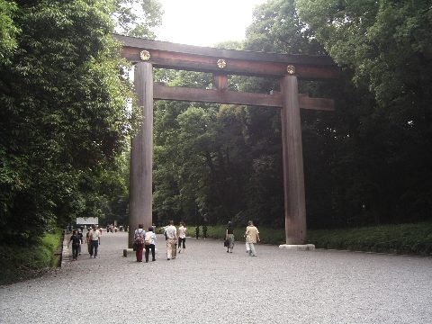

手機出發包
東京 4 晚：秋葉原、明治神宮、鎌倉江之島與澀谷 Sky（20 代友善路線）。
把會用到的資訊放在手機上：離線可看每日行程、預約清單與備註； 含行程視覺化地圖、交通 Step 教學；可下載 .ics 加入行事曆。
行前說明
出發前必讀（先看這裡）
護照、Suica、澀谷 Sky 預約、分階段檢查清單與東京習慣——出發前掃一次，路上就不慌。
下載 .ics 行事曆
澀谷 Sky、鎌倉周遊券、秋葉原主行程與 10/27 14:00 出發去機場提醒。
建議順序
① 下載 .ics → ② 勾完下方 14天/3天/當天檢查 → ③ 預約清單 → ④ 設鬧鐘測試。
20 代熱門店提醒
澀谷 Sky、牛かつもとむら需排隊或預約；扭蛋會館、Uobei 通常現場即可。
台灣出發必備
分階段行前檢查（可勾選、會記住）
預約清單
預約與出發前清單
備註
自己的備註
東京習慣與行前提醒
照片 行程主題照片


行程視覺化
行程小地圖
山手線環狀、湘南方向與每日路線色線標示。虛線圈 = 山手線；藍色區塊 = 湘南／鎌倉方向。
總覽小地圖（5 日路線）
- D1 抵達・秋葉原
- D2 明治神宮・澀谷
- D3 鎌倉・新宿夜
- D4 泡湯日
- D5 返程
每日小地圖
每日行程
每日行程
交通速查 交通與價格速查 JR 為主；成田用 N'EX
交通圖解
地鐵圖・每日路線・Suica 速查
新手先看「圖文教學」學會買票與刷卡；再對照路線示意與地鐵全圖。實戰以 Google Maps 月台資訊為準。
圖文教學：機場→市區、Suica 刷卡
每日路線一圖懂
Suica / 搭車小抄
官方路線圖（可放大）
預算 價格預估與現金配置 以 1 JPY ≈ NT$0.22 粗估
生活感 喫茶、立飲、錢湯與商店街 秋葉原僅 D1 晚上
GiGO・扭蛋會館・Super Potato
D1 晚唯一一天主行程。20 代常逛 GiGO 1 號館、扭蛋會館、Super Potato 中古遊戲； 拍照可加神田明神。中野 Broadway 是住宿旁懷舊挖寶備案。
谷中銀座 + 神保町喫茶（D4）
下町肉丸與草鞋燒，轉神保町古書街喝咖啡。週一部分店休，以散步為主。
光明泉・中野湯田泡湯（D4 必去）
住宿旁錢湯主行程。下午回中野泡湯，結束後在站前晚餐。週一可能公休，出發前查官網；刺青政策各店不同。